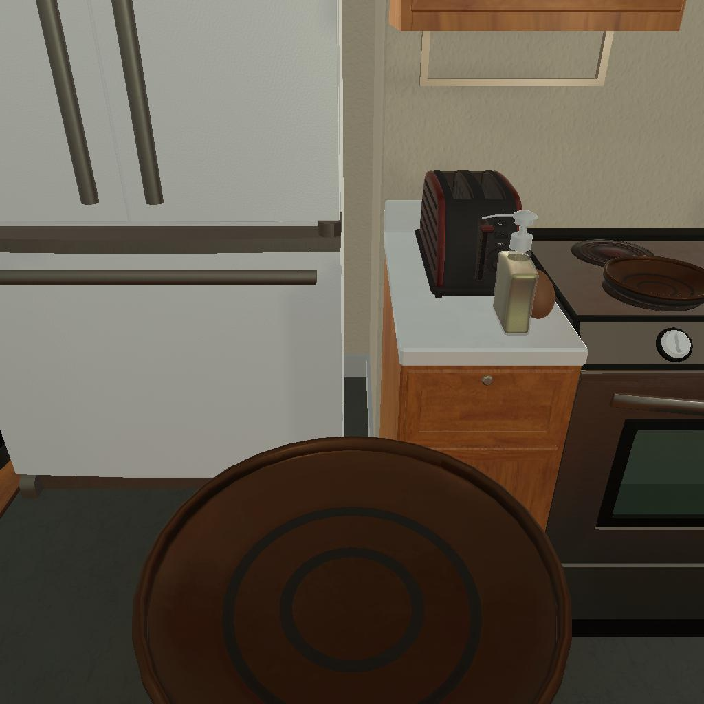

---------------------------------------------------------task: 17---------------------------------------------------------
--------------------------------------------------------------------------------------------------------------------------------------------------------------------
--------------------------------------------------------------------------------------------------------------------------------------------------------------------
Step:--------------------------------------------------------------------------7-------------------------------------------------------------------------------
----------------------------------------
VLM Prompt:
**Task**
Please perform as an embodied AI agent. Our final objective is to put a cool pan in stoveburner. Below is the plan for completing the task, the current observation, alongside historical data and admissible actions for the next step. Please determine the best action for the next step!
**Plan**
Below is a detailed step-by-step plan to complete the task.
1. Find a pan.
2. Pick up the pan.
3. Find a fridge.
4. Cool the pan with the fridge.
5. Find a stove burner.
6. Place the cooled pan on the stove burner.
**Current Observation**
Displayed is an image capturing the current position of the agent.
**History Information**
Displayed are the previous observations with their corresponding actions.
State 0:
No history.
State 1:
1. Step Index in the Plan: 1
2. Objects: Kitchen Sink, Tap, Mug, Decorative Vase
3. Action: go to cabinet 1
State 2:
1. Step Index in the Plan: 1
2. Objects: None visible, Wooden Floor
3. Action: go to cabinet 4
State 3:
1. Step Index in the Plan: 1
2. Objects: Countertop, Microwave, Cabinet 4
3. Action: open cabinet 4
State 4:
Step Index in the Plan: Current step not specified, but involves picking up a pan
Objects: Pan, Cabinet 4 (opened)
Action: take pan 1 from cabinet 4
State 5:
1. Step Index in the Plan: 2
2. Objects: Countertop, Microwave, Pan (previously picked up)
3. Action: go to fridge 1
State 6:
1. Step Index in the Plan: 4
2. Objects: Pan, Fridge
3. Action: put pan 1 in/on fridge 1
State 7:
1. Step Index in the Plan: 6
2. Objects: Pan
3. Action: go to stoveburner 1
**Admissible Actions**
(1): go to cabinet 1
(2): go to cabinet 2
(3): go to cabinet 3
(4): go to countertop 1
(5): go to cabinet 4
(6): go to cabinet 5
(7): go to microwave 1
(8): go to cabinet 6
(9): go to drawer 1
(10): go to drawer 2
(11): go to drawer 3
(12): go to cabinet 7
(13): go to cabinet 8
(14): go to sink 1
(15): go to sinkbasin 1
(16): go to coffeemachine 1
(17): go to cabinet 9
(18): go to cabinet 10
(19): go to drawer 4
(20): go to cabinet 11
(21): go to stoveburner 2
(22): go to stoveburner 3
(23): go to stoveburner 4
(24): go to cabinet 12
(25): go to toaster 1
(26): go to drawer 5
(27): go to countertop 2
(28): go to cabinet 13
(29): go to cabinet 14
(30): go to diningtable 1
(31): go to garbagecan 1
(32): go to safe 1
(33): put pan 1 in/on stoveburner 1
(34): examine pan 1
**Analysis Guideline**
1. Analyze the history and current observation, and then determine our current step in the plan and our current place.
2. List all visible objects related to the task in the current observation, without summarizing any as "various items."
3. Analyze the objects in the current observation based on the history and the requirements for the current step, and then determine if we can complete the step with the current observation.
4. Analyze and decide on the most appropriate action to take.
5. Summarize the analysis using the following format: "Analysis: [The summarization of the analysis], The Most Appropriate Action: (i which is the integer.): [Selected action]"
**Notes**
1. We must complete each step of the plan in order and cannot skip steps when the previous ones are not finished.
2. For "Go to" actions listed as "go to xxx [n]", interpret this as there are n distinct actions available: "go to xxx 1", "go to xxx 2", ..., "go to xxx n". Select one specific action from these options instead of using "go to xxx [n]".
3. If receptacles such as drawers, cabinets, and so forth are closed in the current observation, we may try to open them.
4. Pay attention to synonyms and ensure clarity in the terms used.
5. We must determine and provide the single action which must be in the **Admissible Actions**.
6. If there is no history available, we are at the first step and the current place is "Unknown".
**Answer**
Please select the most suitable action by following the **Analysis Guideline**, keeping the above **Notes** in mind.
----------------------------------------
----------------------------------------
VLM Response:
Analysis: The current step in the plan is to place the cooled pan on the stove burner, which is step 6. The current location appears to be in the kitchen, close to a countertop, with a stove burner visible in the background. Visible objects related to the task include the pan (being held) and parts of the stove where the stove burners are located. Based on the history information provided, the pan was previously cooled in the fridge and is now being transported to the stove burner. The agent is positioned near stoveburner 1, according to the history information. Since the goal is to place the cooled pan on the stove burner and stoveburner 1 is within reach, we can complete the current step with the current observation. The Most Appropriate Action: (33): put pan 1 in/on stoveburner 1.
----------------------------------------
----------------------------------------
>>> Refine VLM Response and Get Pure Action: put pan 1 in/on stoveburner 1
----------------------------------------
-----------------------------------------------------------------
Running time: 49.64428758621216 seconds
Total Money: 0
-----------------------------------------------------------------
-----------------------------------------------------------------
Summarization Prompt:
**Context**
Analysis: Since there is no history information, we are at the first step in the plan, which is to find a statue. The current place is unknown. In the current observation, we see a floorlamp next to an armchair with a small table that has a small object on it, which could potentially be the statue we are looking for. Since the plan requires us to find a statue first and it appears there might be one on the table next to the armchair, we should investigate this object to determine if it is the statue we need.
The Most Appropriate Action: (1): go to armchair 1
**Summary**
1. Step Index in the Plan: 1
2. Objects: Floorlamp, Armchair, Small Table, Small Object (potential statue)
3. Action: go to armchair 1
**Context**
Analysis: The current step in the plan is to place the cooled pan on the stove burner, which is step 6. The current location appears to be in the kitchen, close to a countertop, with a stove burner visible in the background. Visible objects related to the task include the pan (being held) and parts of the stove where the stove burners are located. Based on the history information provided, the pan was previously cooled in the fridge and is now being transported to the stove burner. The agent is positioned near stoveburner 1, according to the history information. Since the goal is to place the cooled pan on the stove burner and stoveburner 1 is within reach, we can complete the current step with the current observation. The Most Appropriate Action: (33): put pan 1 in/on stoveburner 1.
Please summarize the context by following above examples when providing the summary, and ensure that only the summary is included, without any extra explanation.
**Summary**
-----------------------------------------------------------------
-----------------------------------------------------------------
Summarization Response:
1. Step Index in the Plan: 6
2. Objects: Pan, Stove Burner
3. Action: put pan 1 in/on stoveburner 1
-----------------------------------------------------------------
-----------------------------------------------------------------
Text Observation:Nothing happens.
-----------------------------------------------------------------
UNSUCCEED